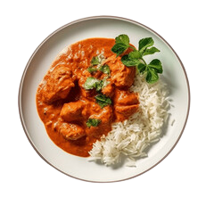
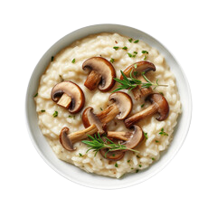
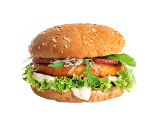
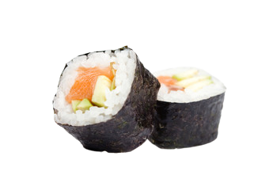
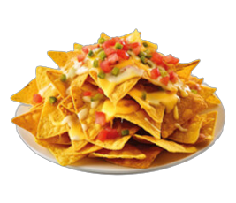
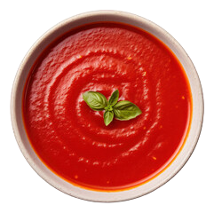
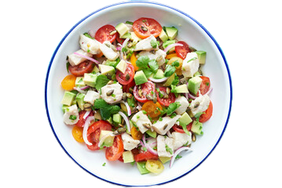
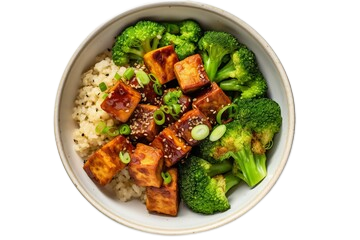
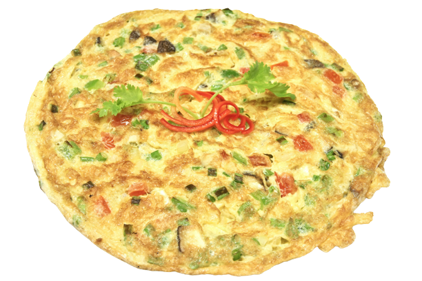
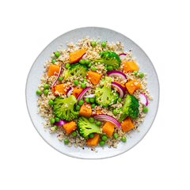

La Recette

.png)
Pâtes à la carbonara
Une recette italienne classique à bae de pâtes, pancetta, d'oeuf, de fromage pecorino et de poivre noir
.png)
Salade César
Une salade verte garnie de croûtons, de parmesan râpé, d'anchois et d'une vinaigrette à base de moutarde et de jus de citron.
.png)
Tarte aux pommes
Une délicieuse tarte sucrée à la garniture de pommes, de sucre et de cannelle, le tout enveloppé dans une croûte croustillante.

Curry de poulet
Un plat épicé originaire d'Inde, préparé avec du poulet, des épices, de la tomate, de l'oignon et du lait de coco.

Risotto champignons
Un plat italien crémeux à base de riz Arborio, de champignons, de bouillon, de vin blanc et de parmesan.

Burger végétarien
Une recette italienne classique à bae de pâtes, pancetta, d'oeuf, de fromage pecorino et de poivre noir
.png)
Gâteau au chocolat
Un dessert chocolaté avec un cœur fondant à l'intérieur, servi avec de la crème glacée

Sushi
Des rouleaux de riz vinaigré garnis de poisson cru, de légumes et d'autres ingrédients, accompagnés de sauce soja et de wasabi.

Chili con carne
Un plat épicé à base de viande hachée, de haricots, de tomates, d'oignons et d'épices.
.png)
Pain fait maison
Une recette de base pour préparer du pain frais à la maison, que ce soit un pain blanc, complet, aux noix, aux graines, etc

Soupe de tomates
Une soupe onctueuse préparée avec des tomates, de l'oignon, de l'ail, du bouillon et des herbes.

Ceviche de poisson
Une spécialité d'Amérique latine à base de poisson cru mariné dans du jus de citron ou de lime, avec des oignons, du piment et de la coriandre

Salade de quinoa
Une salade légère et saine à base de quinoa, de légumes, d'herbes et d'une vinaigrette à l'huile d'olive et au citron.

Omelette champignon
Une omelette aux œufs garnie de champignons sautés, d'oignons et de fromage.
.png)
Tacos au poulet
Des tortillas garnies de morceaux de poulet grillé, de salsa, de guacamole et de garnitures au choix.

Salade de quinoa
Une salade saine et colorée à base de quinoa, de légumes d'été (comme les poivrons, les courgettes et les tomates), d'herbes fraîches et d'une vinaigrette au citron.
Découvrez les recettes de vos plats préférés